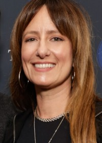
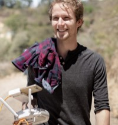

Hulu
15 people whose festival biography mentions Hulu. A mention can mean a job, a past job, a grant, a broadcast or an award: read the bio for which.


- Billy CorbenFilmmaker, panelist · 2 editions, 2024–2025
- Ryan WhiteFilmmaker, panelist · 2 editions, 2017–2020
 Rachel FalconeFilmmaker, panelist · 2024
Rachel FalconeFilmmaker, panelist · 2024- Lucas GuilkeyFilmmaker, panelist · 2024
 Rachel MasonPanelist · 2026
Rachel MasonPanelist · 2026 JoeBill MuñozFilmmaker, panelist · 2024
JoeBill MuñozFilmmaker, panelist · 2024 Kevin ShawPanelist · 2023
Kevin ShawPanelist · 2023- Nimco SheikhadenFilmmaker · 2025

 Will ThwaitesPanelist, filmmaker · 2026
Will ThwaitesPanelist, filmmaker · 2026 Steven Leckart · Maia WiklerFilmmaker · 2026
Steven Leckart · Maia WiklerFilmmaker · 2026